Juan Antonio Samaranch no ha ordenado la apertura de una investigación sobre Sydney-2000 en relación con un supuesto caso de corrupción , pero ha pedido a la ciudad australiana que le suministre ciertas informaciones , al igual que a todas las ciudades candidatas de 1996 al 2006 , según informó ayer un portavoz del Comité Olímpico Internacional ( COI ).
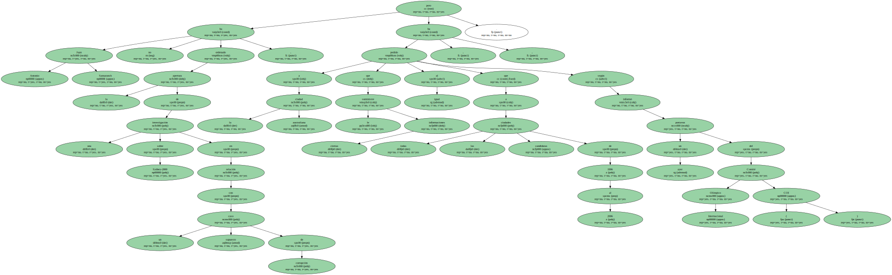27k El presidente Samaranch envió el pasado 29 de enero una carta a Sydney en la que pedía información.
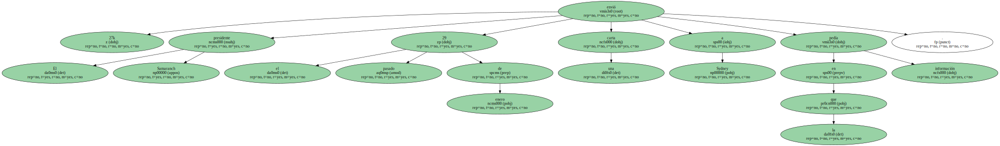También han recibido una misiva similar todas las ciudades candidatas a los Juegos Olímpicos de 1996 , 1998 , 2000 , 2002 y 2004 , según el COI , al igual que las ciudades candidatas para el 2006 , acompañadas de nuevas instrucciones sobre el proceso de candidatura , que será modificado tras el escándalo de Salt Lake City.
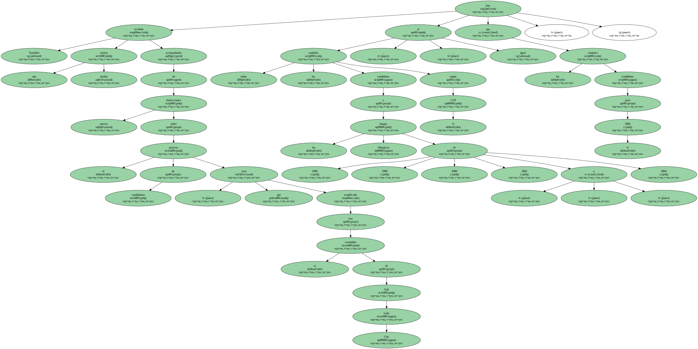John Coates , presidente del Comité Olímpico Australiano , reconoció ayer que tras el escándalo desatado no descarta anular alguna de las atenciones previstas en Sydney para los miembros del COI.
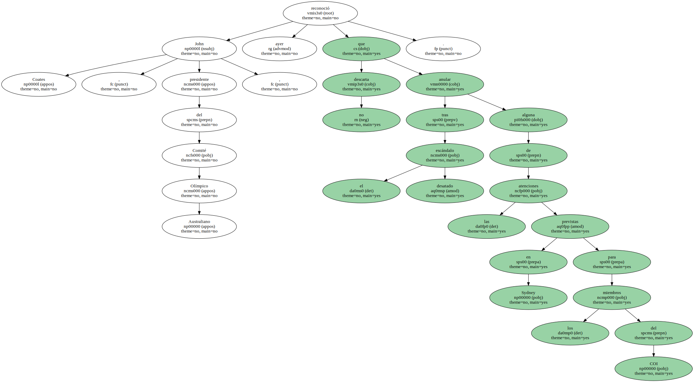" Puede que tengan que desplazarse en autobús y no en automóviles de lujo con chofer " , señaló Coates.
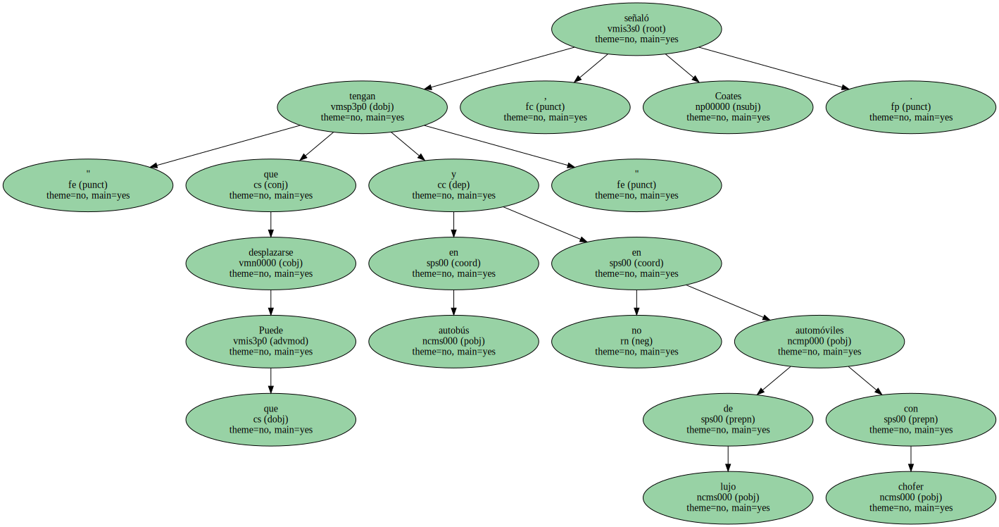El suizo François Carrara , director general del COI , ironizó ayer , en Lausana , sobre este tema reconociendo que ningún representante olímpico estaría en contra de esa idea.
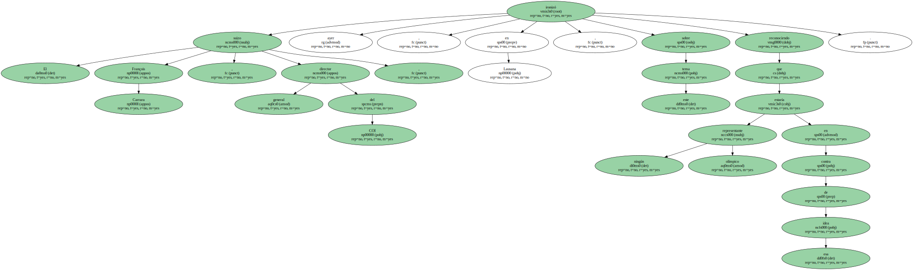" Es más , será estupendo caminar por Sidney . Me encanta andar , nadar e ir en esos curiosos barcos que son como autobuses " , comentó Carrara.
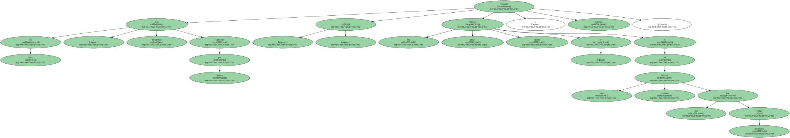Brindisi convoca a Eto'o para el encuentro de Valladolid.
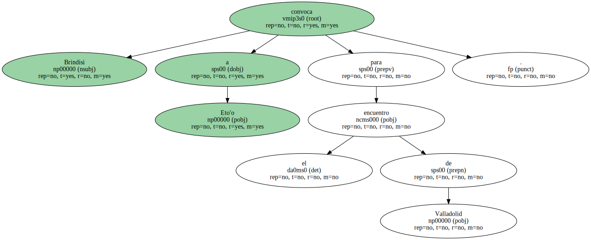El ex jugador del Real Madrid es la única novedad en la lista , formada por 18 futbolistas , del entrenador del Espanyol.
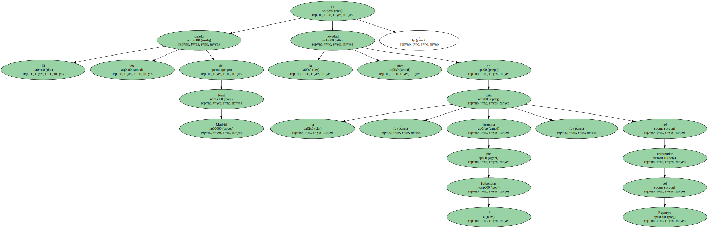Samuel Eto'o , que se mostró satisfecho por la confianza del técnico argentino , dijo que la plantilla no debía fiarse por el resultado del partido de ida de la Copa del Rey disputado en el Estadio Olímpico ( 4-2 ).
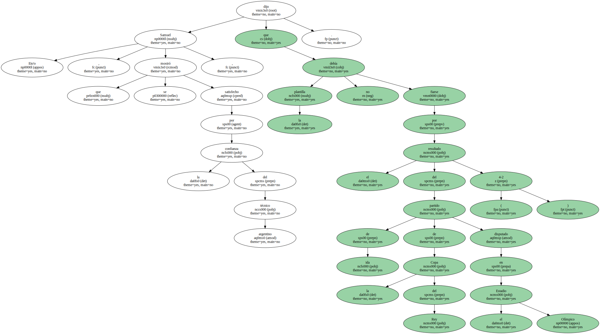Darío Silva no viaja porque el club aún no ha recibido su transfer.
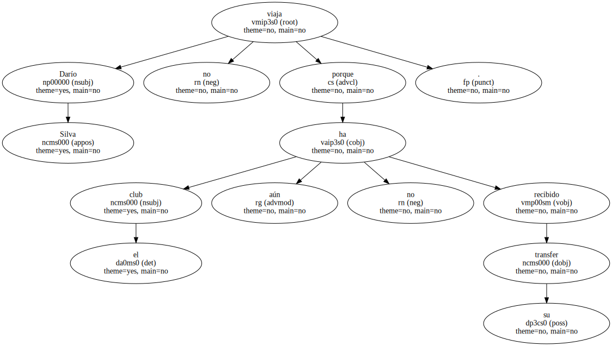Krauss prescinde de varios titulares ante el Atlético en la Copa.
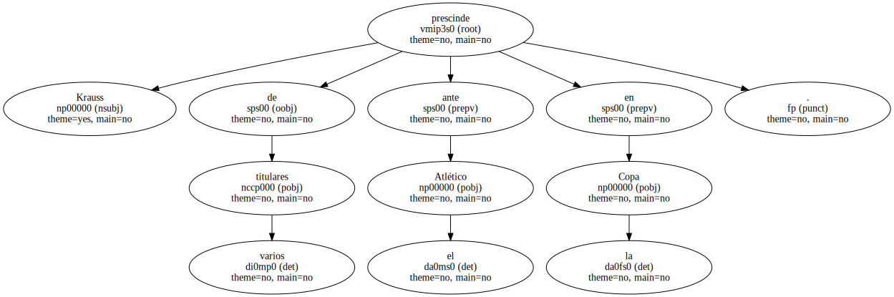El Atlético y la Real Sociedad disputan esta noche en el Calderón el partido de vuelta de los octavos de final de la Copa del Rey ( 21.30 , TV-3 ).
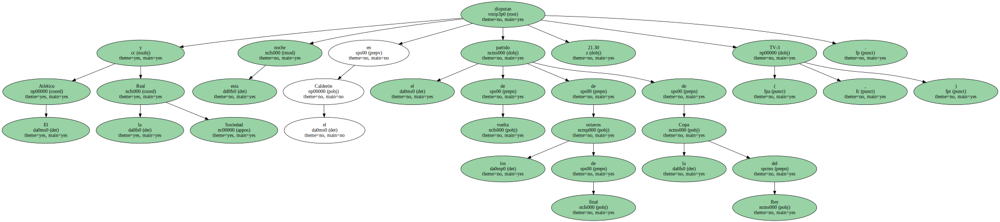El equipo rojiblanco ganó 1-2 en San Sebastián y el técnico realista , Bernd Krauss , decidió ayer no convocar para este encuentro a Kovacevic , Sa Pinto , De Pedro , Gómez y Aranzabal.
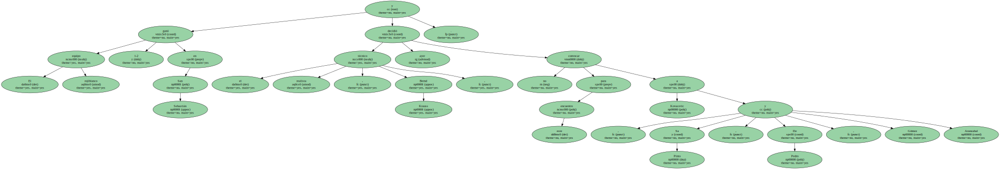Arrigo Sacchi recupera al defensa argentino Chamot , aunque dará descanso a Roberto y Toni.
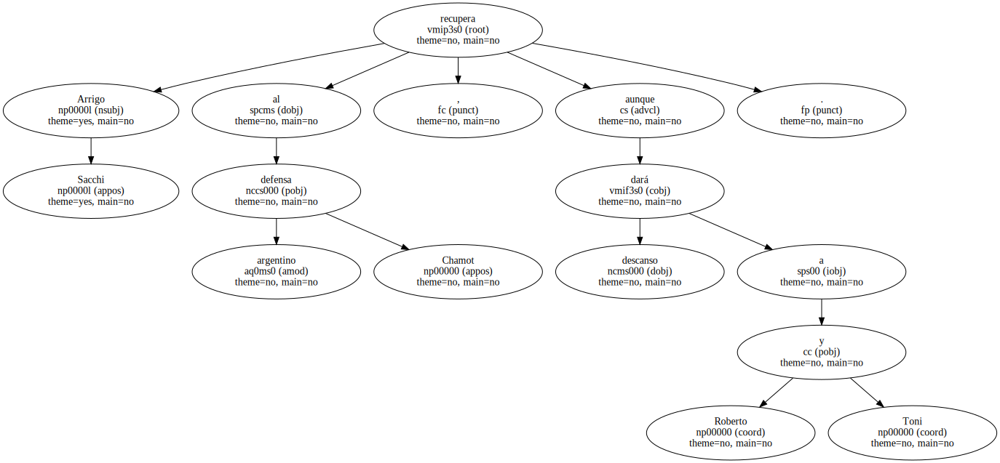- - C. F. M. Hoddle no dimite por su opinión sobre los discapacitados.
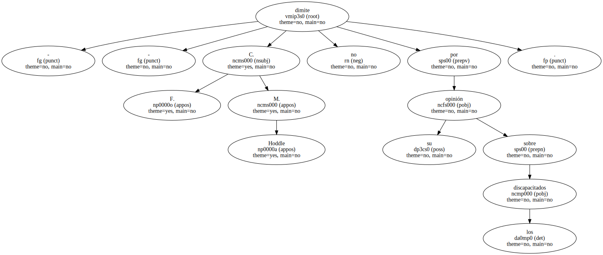The Times había publicado unas manifestaciones del seleccionador inglés en las que decía que " los discapacitados físicos y mentales pagan por los pecados que cometieron en una vida anterior ".
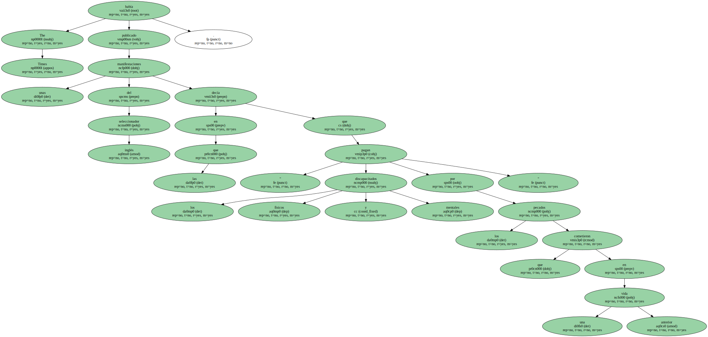El primer ministro británico , Tony Blair , reprochó las declaraciones del técnico inglés y se mostró partidario de que abandonara el cargo.
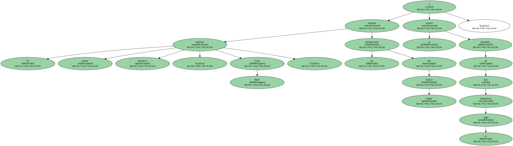Hoddle anunció ayer su intención de querellarse con el diario.
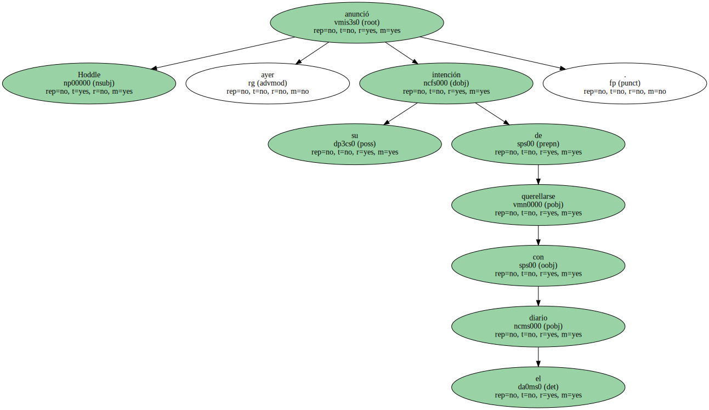Corominas , cuestionado en Lleida.
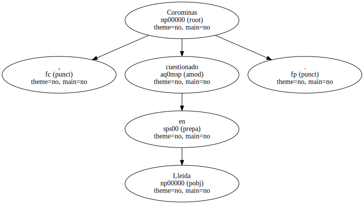La racha de malos resultados , con tres derrotas consecutivas , ha agravado la situación de la Unió Esportiva Lleida , que vive un momento de crisis , que podría afectar a Miquel Corominas.
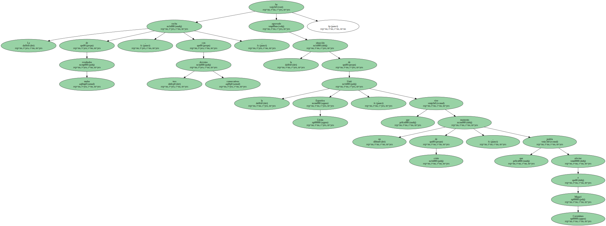El técnico empieza a estar cuestionado y su futuro pasa ahora por la reunión que mantendrá este Jueves el Consejo de Administración del club.
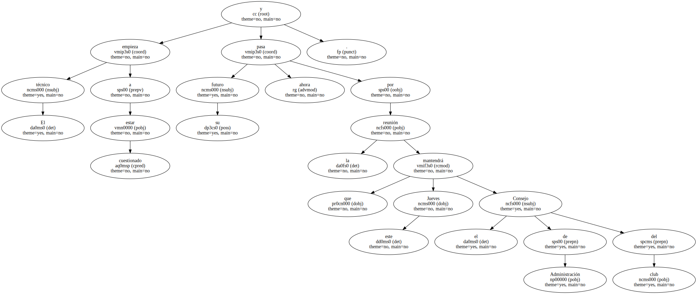Los Denver Broncos revalidan su título de la Super Bowl.
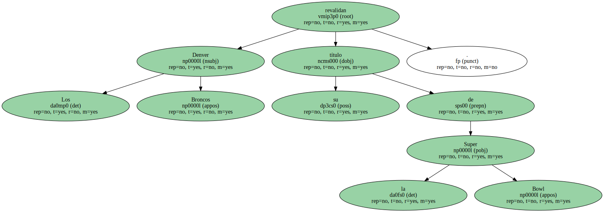Los campeones derrotaron en una final sin apenas emoción a los Atlanta Falcons ( 34-19 ).

Denver estuvo dirigido por un magistral John Elway , veterano quarterback de 38 años , que fue designado MVP ( jugador más valioso ) del partido.
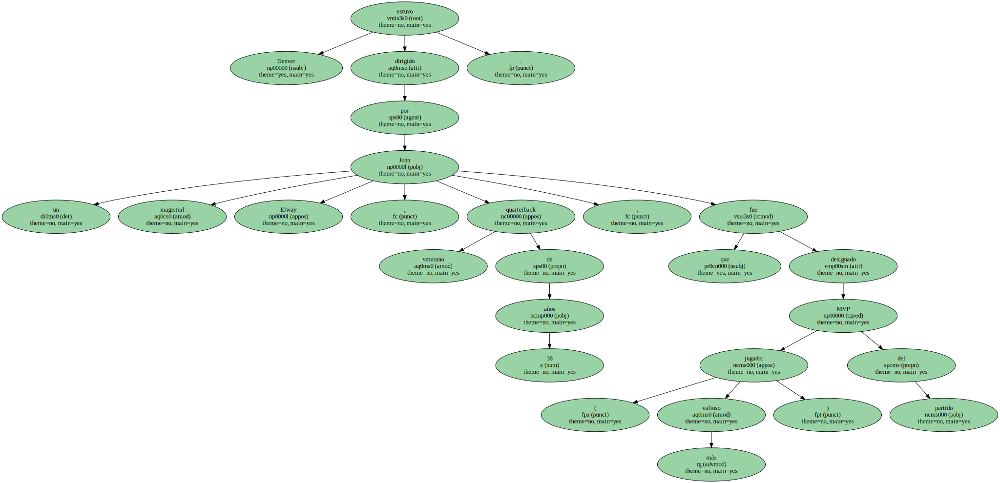Elway , toda una institución , tiene previsto ahora poner fin a su larga carrera , aunque aún no ha anunciado nada.
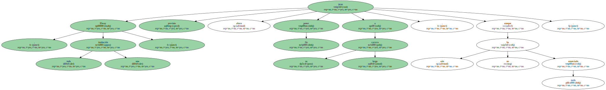Alex Corretja accede al puesto número dos del mundo.
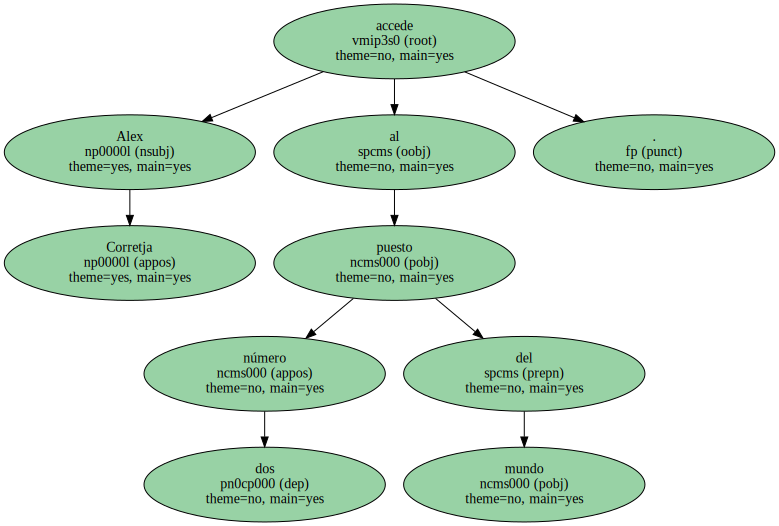El tenista catalán se colocó ayer a sólo 214 puntos del estadounidense Pete Sampras , que , pese a no jugar en el Abierto de Australia , se mantuvo en el primer puesto de la clasificación ATP , con 3744 puntos.

El tenista catalán se colocó ayer a sólo 214 puntos del estadounidense Pete Sampras , que , pese a no jugar en el Abierto de Australia , se mantuvo en el primer puesto de la clasificación ATP , con 3744 puntos.

El tenista catalán se colocó ayer a sólo 214 puntos del estadounidense Pete Sampras , que , pese a no jugar en el Abierto de Australia , se mantuvo en el primer puesto de la clasificación ATP , con 3744 puntos.
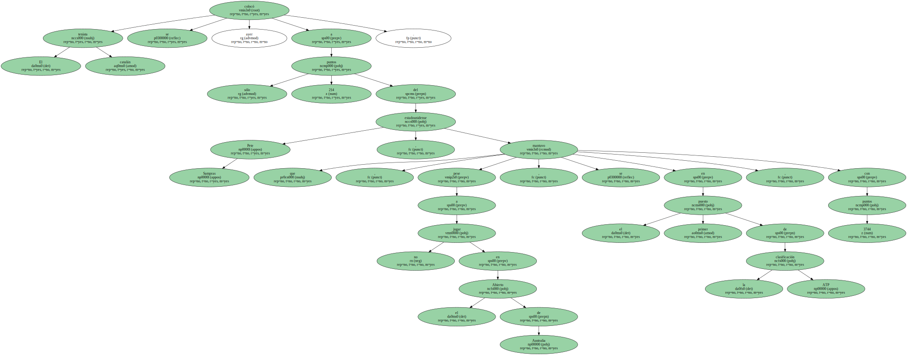El tenista catalán se colocó ayer a sólo 214 puntos del estadounidense Pete Sampras , que , pese a no jugar en el Abierto de Australia , se mantuvo en el primer puesto de la clasificación ATP , con 3744 puntos.

El tenista catalán se colocó ayer a sólo 214 puntos del estadounidense Pete Sampras , que , pese a no jugar en el Abierto de Australia , se mantuvo en el primer puesto de la clasificación ATP , con 3744 puntos.

El tenista catalán se colocó ayer a sólo 214 puntos del estadounidense Pete Sampras , que , pese a no jugar en el Abierto de Australia , se mantuvo en el primer puesto de la clasificación ATP , con 3744 puntos.

El tenista catalán se colocó ayer a sólo 214 puntos del estadounidense Pete Sampras , que , pese a no jugar en el Abierto de Australia , se mantuvo en el primer puesto de la clasificación ATP , con 3744 puntos.
El tenista catalán se colocó ayer a sólo 214 puntos del estadounidense Pete Sampras , que , pese a no jugar en el Abierto de Australia , se mantuvo en el primer puesto de la clasificación ATP , con 3744 puntos.

Carlos Moyà seguirá ocupando la quinta plaza una semana más , con 3178 puntos.
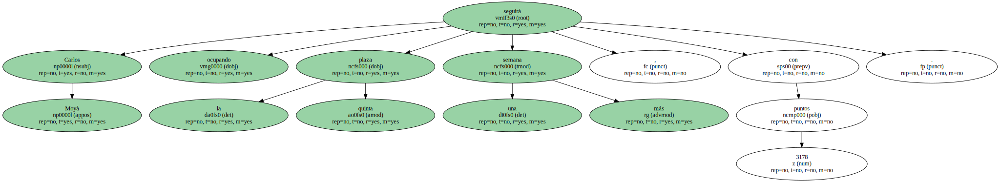En la clasificación femenina , la estadounidense Lindsay Davenport se mantiene primera , mientras Arantxa Sánchez es quinta y Conchita Martínez desciende hasta el puesto 16º.
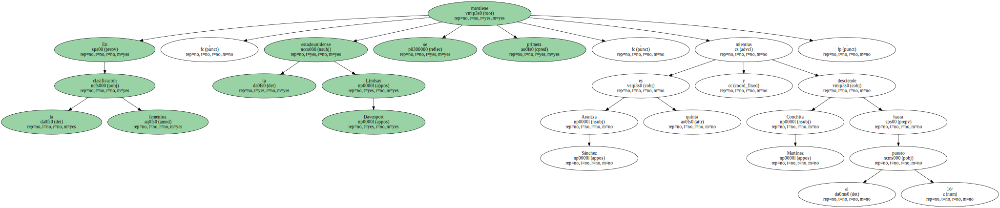